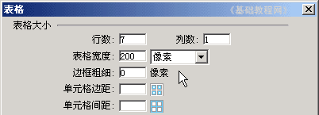
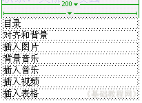
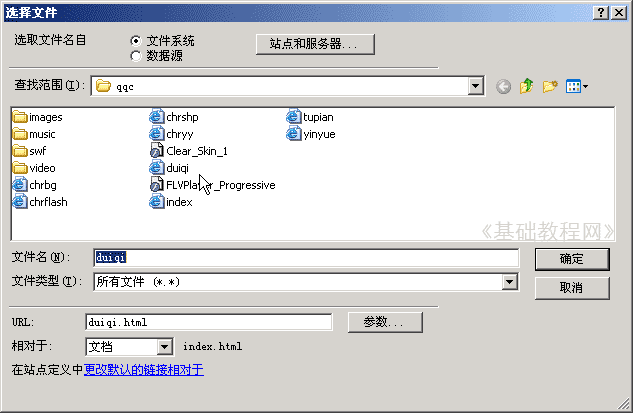
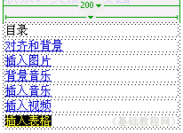

Dreamweaver 8 基础入门教程
十、超级链接 返回
网页之间的跳转是通过超级链接来实现的，超级链接相当于一个路口标记，点击后就可以进入；
超级链接一般具有三个特点：蓝色、下划线 和手形标记，下面我们通过一个练习来学习；
1、启动Dreamweaver
1）点击“开始－所有程序－Macromedia－Macromedia Dreamweaver 8”，；
2）在起始页左边的“打开最近项目”中，点最下边的打开..，打开站点中的 index 文件；
3）把光标点到最后，按回车键让光标另起一行，保存一下文件；
2、创建超链接
1）点菜单“插入－表格”命令，出来的对话框中，设置表格为7行、1列，宽度200，边框粗细为0；

2）表格的第一行里输入“目录”，第二行输入“对齐和背景”，第三行输入“插入图片”，第四行输入“背景音乐”，第五行输入“插入音乐”，第六行输入“插入视频”，第七行输入“插入表格”；

行数不够了，可以点菜单“修改－表格－插入行”命令；
3）拖黑选中第二行的“文字和背景”，瞄准黑色后点右键，在出来的菜单中间选“创建链接”，弹出一个浏览对话框；
4）在出来的对话框里面找到自己的站点，然后选择里面的duiqi文件；

下面的属性面板的右边，也出来链接目标；
同样选中其他行的文字，创建相应的超级链接；

保存一下文件，点预览按钮查看网页，点击各个超链接，看一下是否能跳转到相应的页面，看完点后退按钮返回；
本节学习了创建超级链接的基本方法，如果你成功地理解并完成了练习，请继续学习；
本教程由86团学校TeliuTe制作|著作权所有
基础教程网：http://teliute.org/
美丽的校园……
转载和引用本站内容，请保留版权信息和本站链接。